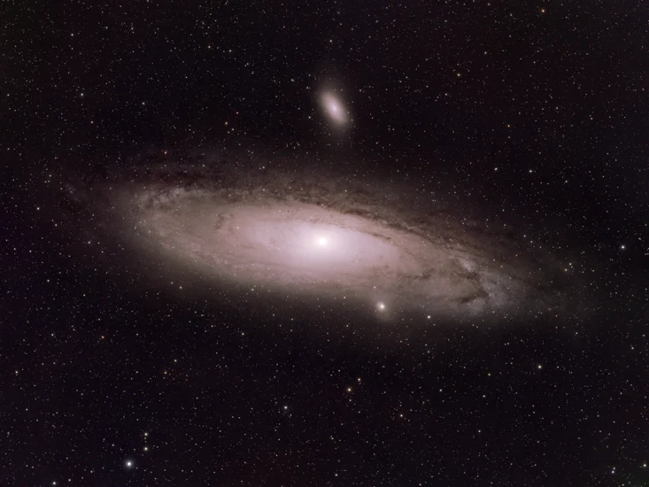
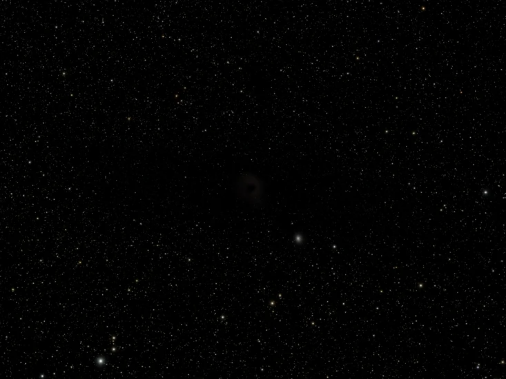

Start with a stacked telescope exposure. If you have individual FITS frames, StackingWizard can combine them. Process the stack in AstroWizard, then export the four aligned images shown below. AstroWeb takes over at the film-making stage.

final
The finished colour image. AstroWeb uses it as the reference for the finished composition.
starless
The galaxy or nebula with the stars removed. This becomes the background layer.

stars
The isolated star field. Moving it relative to the background creates parallax.
stars_laid
An alternative star-layer export. Studio compares both star layers and their blends against the final image.
Use the same object prefix, for example M_31_final.png and M_31_starless.png. An optional final FITS adds observation metadata and can help locate the field. For the Sun, Moon, planets, star trails or a Milky Way landscape, one finished image plus optional FITS is enough.
Capture gallery
The original light
Three finished captures from the demonstration collection. Open a photograph to study its structure before watching the corresponding film.
Andromeda Galaxy M31North America Nebula NGC 7000Eastern Veil Nebula NGC 6992
The interface
At the desk. On the sofa.
Compose the shot in Studio, explore the original in your browser or open the same capture with a TV remote. The interfaces are also available in Dutch.
Self-hosted
Build your own collection
The server stores the originals and renders the films. Browsers and the TV app read the published collection. Start on a private network or use an HTTPS host.
Choose Gaia parallax in Studio to animate matched stars using distance estimates from Gaia DR3. Studio reports usable matches and the measured distance range.
Optionally estimate unmatched stars’ motion from nearby stars with consistent distances. Estimated stars are reported separately.
Preserving the starless background removes dark stellar imprints. Gaia stars now share the nebula’s constrained camera and zoom.